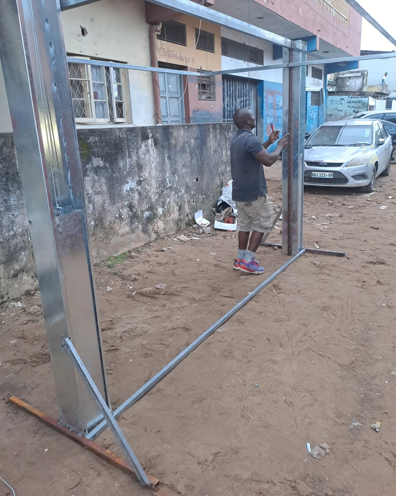
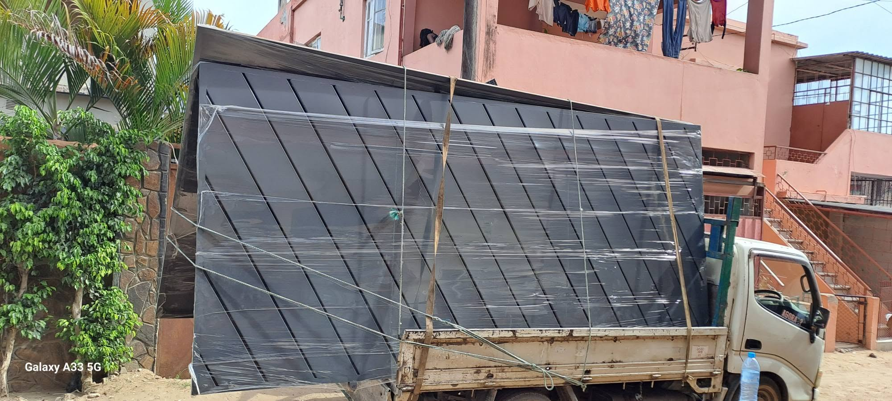

Missão
Fornecer soluções tecnológicas e de segurança confiáveis, acessÃveis e bem executadas para famÃlias e empresas em Moçambique.
Tecnologia, redes e segurança — uma empresa moçambicana ao serviço de casas e negócios em Maputo.

A QL REDES (também conhecida como QL Group) é uma empresa moçambicana sediada em Maputo, especializada em Tecnologia, Redes Informáticas, Electricidade e Segurança Electrónica.
Com mais de 10 anos de experiência no terreno, unimos competências técnicas para entregar soluções integradas — da infraestrutura de rede à videovigilância, passando por instalações eléctricas, portões automáticos e pérgolas.
Actuamos nos segmentos B2C (residencial) e B2B (empresas e comércio), com ênfase em soluções práticas, fiáveis e adaptadas à realidade de Maputo.
Proprietário e Director Geral — engenheiro informático e técnico de redes. Lidera a visão da empresa: oferecer tecnologia e segurança com profissionalismo, proximidade ao cliente e execução de qualidade.
A presença online da QL REDES no Facebook e Instagram (@ql_group_) mostra o dia-a-dia dos projectos — instalação de portões, segurança e trabalhos de campo em Maputo.
Falar connosco
Fornecer soluções tecnológicas e de segurança confiáveis, acessÃveis e bem executadas para famÃlias e empresas em Moçambique.
Ser referência em Maputo em soluções integradas de redes, electricidade e segurança electrónica, com presença digital forte.
Profissionalismo, inovação prática, atendimento personalizado, transparência nos orçamentos e compromisso com o cliente local.
Redes + electricidade + segurança num só parceiro — menos fricção e melhor coordenação de obra.
Canal preferido em Moçambique: respostas rápidas, orçamentos e acompanhamento do projecto.
Portões, estruturas e equipamentos — com entrega e montagem no local.
Sediada em Maputo, na Rua Irmãos Rubbi 2250 — perto de si e do seu projecto.
Conte-nos o seu projecto. Orçamento gratuito e sem compromisso.